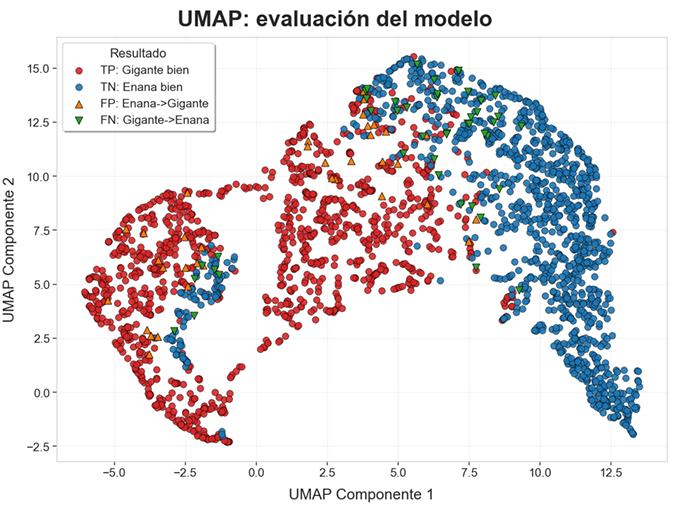
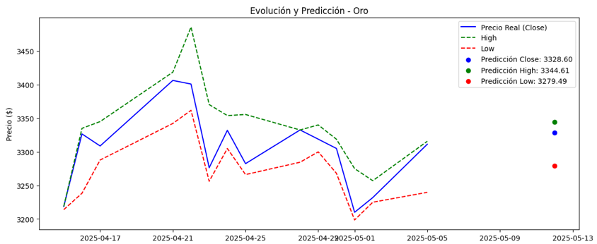
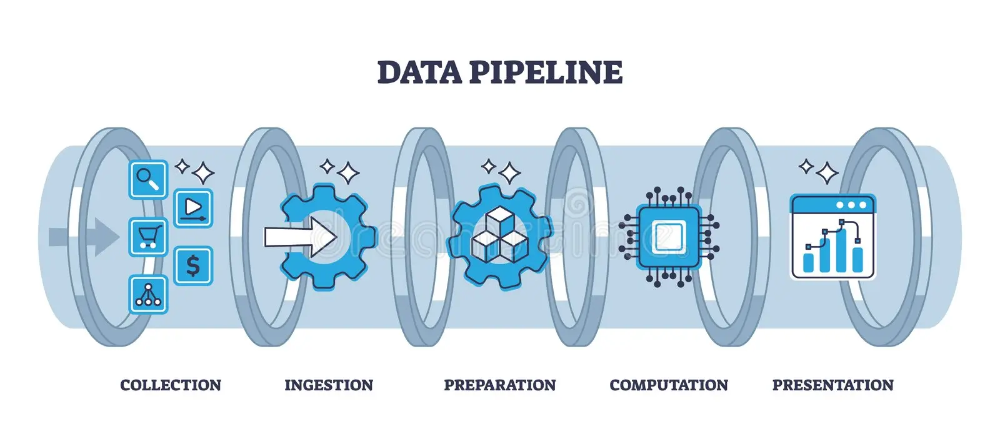
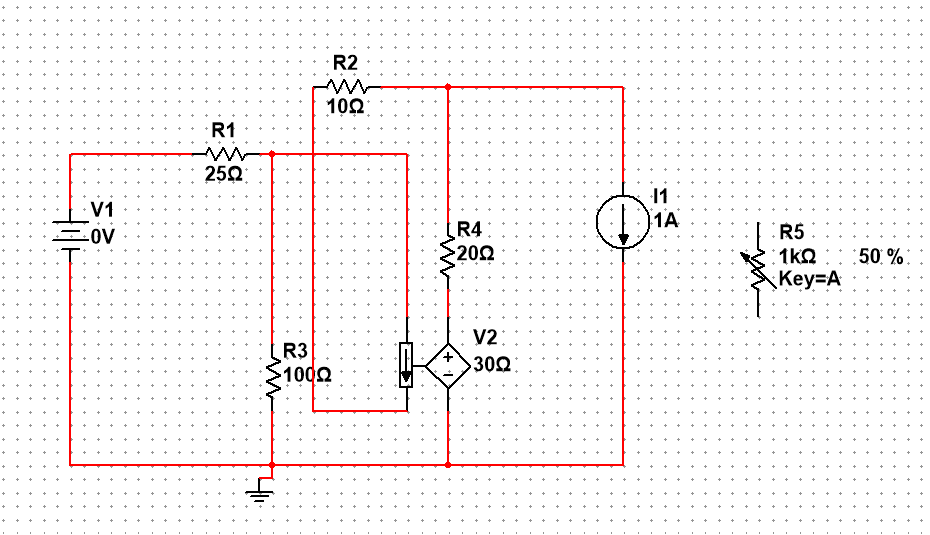
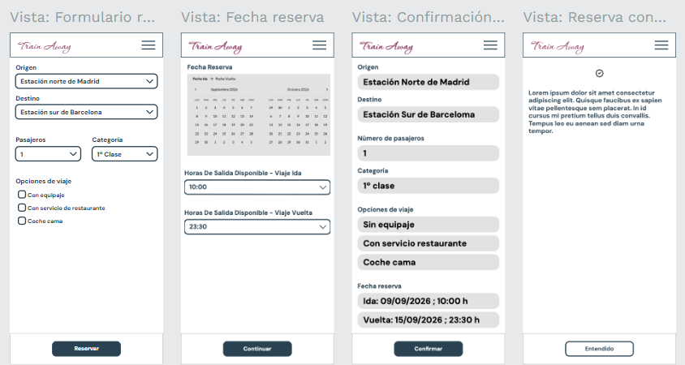

Estudiante de Ingeniería Informática, Data Analyst y desarrollador
Proyectos
Análisis de Datos y Machine Learning
TFG: Clasificación Estelar con ML (Gaia DR3)

Evaluación de rendimiento del modelo sobre la fotometría
Trabajo de Fin de Grado evaluando diferentes algoritmos de aprendizaje automático para clasificar estrellas. Aprendí a refinar hiperparámetros en modelos complejos y a trabajar con inmensos volúmenes tabulares.
Análisis predictivo de generación de energía solar en la región de Aruba para calcular el rendimiento energético. En curso
Machine Learning
Python
Selenium
Predicción de mercados financieros

Resultados de la predicción de precios en mercados financieros
Análisis de datos avanzados para predecir movimientos y tendencias en mercados financieros, empleando modelos estadísticos y visualización de datos.
Python
Pandas
Análisis de Datos
Experiencia Profesional (Civitatis)
Pipeline de Mapeo Geográfico (España)

Procesamiento automatizado de ubicaciones a nivel nacional
Desarrollo de un pipeline de datos para mapear y relacionar automáticamente cada ubicación o punto de interés en España con su provincia y comunidad autónoma, optimizando la estructura de la base de datos para el análisis territorial.
SQL
Python
Data Engineering
Dashboard de Decisión para Comité Ejecutivo
Panel interactivo para el seguimiento de rendimiento
Creación de un dashboard analítico e interactivo dirigido al comité para mostrar el seguimiento de los principales KPIs, OKRs y métricas clave del negocio, facilitando la toma de decisiones estratégicas de alto nivel.
Cursor
Visualización de Datos
Business Intelligence
SQL
Universidad y Herramientas
Análisis y Simulación de Circuitos

Pruebas de filtrado RC en NI Multisim
Simulación virtual para el análisis de redes, trabajando con filtros RC y equivalentes de Thévenin para validar cálculos teóricos en el entorno universitario.
NI Multisim
Diseño de circuitos
Prototipado Interactivo UI/UX

Diagramación de pantallas e interacciones
Uso de la herramienta de código abierto Penpot para diseñar los wireframes y el flujo de navegación de aplicaciones e interfaces web.
Penpot
Diseño UI/UX
Cómo trabajo
Extracción y Análisis Exploratorio (EDA):
Entendimiento profundo del negocio y definición de KPIs.
Extracción estructurada de la información mediante consultas SQL complejas o pipelines de datos.
Modelado y Desarrollo: Limpieza de datos y entrenamiento de modelos predictivos en Python, priorizando un enfoque analítico para optimizar la eficiencia de los algoritmos.
Evaluación y Validación: Testing riguroso de las métricas de rendimiento de los modelos (matrices de confusión, precisión) y validación de las hipótesis planteadas.
Despliegue y Visualización: Despliegue de dashboards interactivos para facilitar la toma de decisiones estratégicas de forma clara.